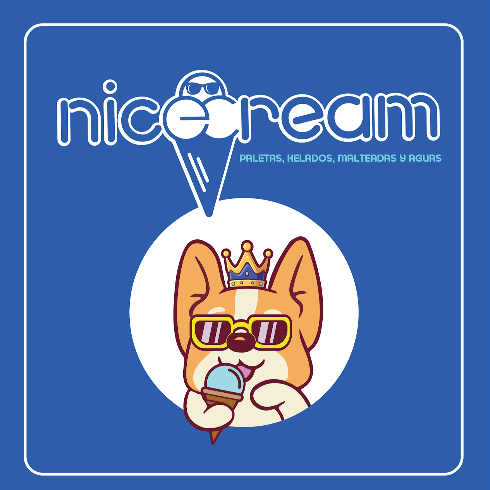

27
opciones en nuestra sección especial
10 paletas sin azúcar añadida, 12 paletas keto y 5 helados listados en el menú. ¡Mucho para escoger!
De los clásicos de siempre a combinaciones como Ferrero Keto, pistache, piñón y limón sin azúcar añadida. En NiceCream hay mucho más por descubrir. ¡Visítanos en El Retoño (Iztapalapa) o Pedregal (Tlalpan)!
Destacado de noviembre: nuestro helado de limón sin azúcar añadida
Nos encanta que puedas elegir. Por eso nuestra línea especial va mucho más allá de los sabores básicos: hay opciones frutales, cremosas y combinaciones para descubrir.
10 paletas sin azúcar añadida, 12 paletas keto y 5 helados listados en el menú. ¡Mucho para escoger!
Ferrero Keto, ChocoFresa Keto, piñón, pistache, mazapán y otras combinaciones con personalidad.
Desde fresa y cajeta sin azúcar añadida hasta limón con chamoy. Y en noviembre, el protagonista es nuestro helado de limón sin azúcar añadida.
Una aclaración importante: sin azúcar añadida no significa cero azúcares naturales. Algunos productos contienen edulcorantes o alérgenos; consúltanos ingredientes y disponibilidad antes de pedir.
En NiceCream elaboramos paletas, helados y bebidas con ingredientes naturales e insumos cuidadosamente seleccionados. Priorizamos la fruta, bases de alta calidad y formulaciones equilibradas para ofrecer un sabor auténtico — nada de atajos.
Nos gustan tanto los sabores tradicionales como los que cuesta elegir porque todos se antojan: paletas frutales, chamoy, crema y especialidades premium. Y algo que nos hace muy especiales es nuestra amplia línea de paletas y helados keto y sin azúcar añadida, con sabores como Ferrero Keto, ChocoFresa Keto, pistache y piñón. También encontrarás opciones veganas y una opción para mascotas. 🐾
Ya estaba en nuestro menú, ¡y este noviembre queremos que lo conozcas! Descubre nuestro helado de limón sin azúcar añadida y pregunta por su disponibilidad.
Nuestro helado de limón sin azúcar añadida ya estaba en el menú y será el protagonista de noviembre. Es cítrico, ligero y refrescante.
No es un sabor diferente al que ya publicamos: es la misma opción de limón sin azúcar que encontrarás en Helados → Nieve y Keto / Sin azúcar.
Preguntar disponibilidad por WhatsApp → Noviembre 2026 · Sujeto a disponibilidadEn noviembre destacamos nuestro helado de limón sin azúcar, que ya estaba en el menú. ¡Vota por una idea para un futuro lanzamiento!
Una solicitud por navegador cada mes. La recepción del servidor se verifica por separado.
Descubre los clásicos y las opciones especiales que hacen diferente a NiceCream. La disponibilidad y los precios pueden variar; consúltanos por WhatsApp.
¿Organizas un cumpleaños, una reunión o un evento de trabajo? Cuéntanos cuántas personas asistirán y te ayudamos a preparar una cotización según tus gustos y disponibilidad.
¿Tienes algo distinto en mente? Pregunta y cotiza por WhatsApp.
Toda la información para encontrarnos, actualizada.
📍 Dentro del Mercadito de la Unidad Pemex
Si no encuentras tu respuesta aquí, escríbenos por WhatsApp.
Sí, aceptamos tarjeta y también tarjetas de vales.
Actualmente no.
Nuestra sección especial lista 27 opciones: 10 paletas sin azúcar añadida, 12 paletas keto y 5 helados. Encontrarás sabores como Ferrero Keto, ChocoFresa Keto, pistache, piñón y limón sin azúcar añadida. “Sin azúcar añadida” no significa libre de azúcares naturales; consulta ingredientes y disponibilidad por sucursal.
Sí, hay opciones veganas identificadas en el menú y una opción especial para mascotas. Pregúntanos qué sabores están disponibles y cuáles son sus ingredientes.
Te recomendamos escribirnos por WhatsApp lo antes posible. Compártenos la fecha, la sucursal y la cantidad aproximada que necesitas; te confirmaremos disponibilidad y tiempo de preparación antes de cerrar tu pedido.
No contamos con estacionamiento propio, pero normalmente siempre hay espacio disponible en la calle cerca de la sucursal.
Sí, algunos sabores son de temporada y su disponibilidad puede variar. Revisa la sección de Novedades para lo más reciente.
¿Se te antojó algo o quieres cotizar un evento? Escríbenos por WhatsApp, explora el menú o descubre cómo llegar.
¿Nos visitaste? Nos ayuda muchísimo que dejes tu reseña en Google ⭐